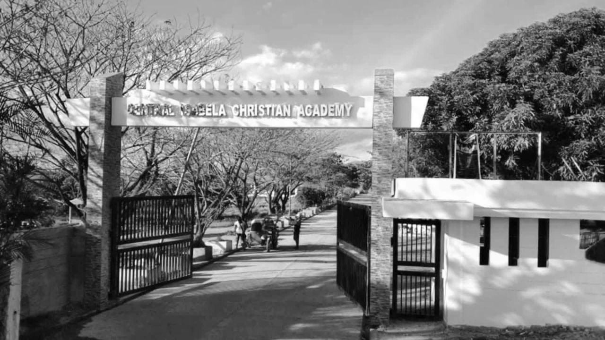
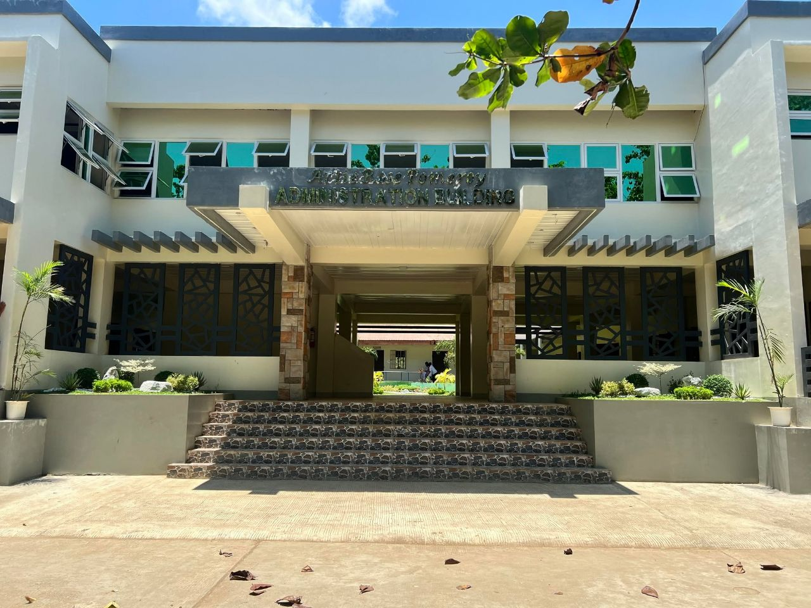

Philosophy
The Central Isabela Christian Academy (CICA) is a private learning institution geared towards the development of an individual to become academically, morally and spiritually adept in providing affordable and quality educational services.
Central Isabela Christian Academy continues a legacy of quality Christian education built on faith, compassion, and service.
Central Isabela Christian Academy is a private learning institution geared towards the development of an individual to become academically, morally and spiritually adept in providing affordable and quality educational services.
“Great institutions often begin not with grand buildings or large crowds, but with a burden in someone’s heart.”
Explore the statements that shape CICA’s educational purpose.
The Central Isabela Christian Academy (CICA) is a private learning institution geared towards the development of an individual to become academically, morally and spiritually adept in providing affordable and quality educational services.
To be a center of INSTRUCTION in Christian and Academic disciplines essential to a balanced and holistic development of an individual.
CENTRAL ISABELA CHRISTIAN ACADEMY exists mainly for the purpose of bringing honor and glory to God. It commits to deliver quality learning imbued with spiritual well-being that impacts the need of the community. CICA affirms its role in the formation of the youth to become competent and compassionate people in the service of His church and of the country.
In 1986, a need for accessible high school education in Marana 1st became a shared vision. Compassion, generosity, prayer, and action transformed that vision into Central Isabela Christian Academy.


Young people in Marana 1st faced costly transportation, long travel, and risky roads after elementary school. For many families, continuing education felt out of reach.
After an ISELCO II board meeting, they spoke about the future of the youth and the urgent need for education in the area.
Mr. Anza offered the land for the establishment of a secondary school — a declaration of hope for the next generation.
The Board of Trustees of the Philippine Mission Churches of Christ of Northern Luzon, led by President Mr. Charles W. Selby, embraced the opportunity. Pastor Rogelio F. Tenorio helped lay the groundwork; permits were secured, teachers recruited, and two modest three-classroom buildings rose.
The facilities were simple and resources limited, but the vision was strong. Those first students became trailblazers of a growing legacy.
By its third year, CICA offered a complete secondary curriculum. Its first graduates marched proudly, enrollment grew, and additional buildings and facilities followed.
The four core values listed in CICA’s provided institutional statement.
Written each year by every student, teacher, parent, and leader who walks through its gates — for God’s honor and glory.
Back to the Beginning